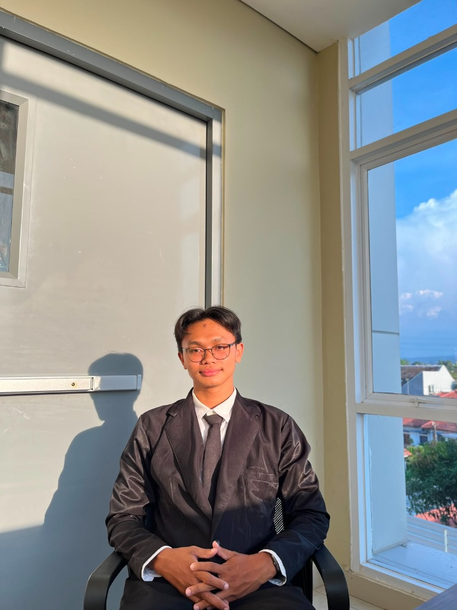

Spesialis Analisis Pertumbuhan Ekonomi Syariah dengan kemahiran teknis yang kuat di bidang data entry, pengolahan administrasi retail, serta manajemen database perkantoran.

Ekonomi Syariah '26
LITERASI
Ekonomi Islam
AKURASI
95% Data Entry
Saya adalah lulusan baru (Fresh Graduate) Ekonomi Syariah dari UIN Siber Syekh Nurjati Cirebon. Saya memiliki keseimbangan kompetensi yang kuat antara analisis teoritis pertumbuhan ekonomi syariah dan keahlian praktis dalam administrasi, operasional, pengetikan presisi, serta manajemen database.
Pendidikan Terakhir
UIN Siber Syekh Nurjati Cirebon
Sarjana Ekonomi Syariah (S.E.)
Domisili Sekarang
Cirebon, Jawa Barat
Melalui pengalaman magang di industri ritel yang dinamis dan rekam jejak kepemimpinan tingkat universitas hingga jaringan nasional, saya telah mengasah kemampuan manajemen database, pengolahan dokumen sponsorship, serta koordinasi tim yang kolaboratif.
Mengelola proposal sponsorship dan negosiasi eksternal korporat.
Memproses administrasi pembukaan outlet baru toko ritel secara akurat.
Dipercaya memimpin organisasi kemahasiswaan tingkat universitas.
Jejak langkah kontribusi saya di dunia kerja profesional serta kepemimpinan organisasi kemahasiswaan.
Administrative & Operational Intern
Februari 2025 – Juni 2025 (4 Bulan)
Periode Keaktifan: 2 Tahun (2024 - 2025)
Periode II (2025) - Ketua Umum: Memimpin jalannya organisasi secara menyeluruh, mengoordinasikan 5 divisi kerja, serta menjadi representasi utama dalam forum ilmiah dan kemitraan akademis luar kampus.
Periode I (2024) - Kepala HRD: Bertanggung jawab penuh atas manajemen sumber daya pengurus, merancang materi pelatihan internal, meningkatkan engagement anggota, serta memimpin proses rekonsiliasi tim.
Periode Keaktifan: 2025
Kepala Divisi Litbang (Penelitian & Pengembangan): Bertugas menyusun kurikulum kajian ilmiah kontemporer, mengelola pangkalan data penelitian ekonomi syariah anggota regional, serta menyusun laporan rekomendasi kebijakan literasi keuangan mikro syariah.
Desember 2023 - Desember 2025 (2 Tahun)
Staf Public Relations (Hubungan Masyarakat): Berperan aktif menjembatani relasi antara wirausahawan mahasiswa dengan investor luar, menyusun publikasi produk unggulan, dan menangani strategi komunikasi promosi acara bazar berkala.
Matriks keterampilan teruji yang saya miliki untuk menunjang produktivitas profesional.
Uji secara langsung kecakapan data entry, pemodelan spreadsheet Excel, dan desain PowerPoint saya secara interaktif.
Ubah angka pada kolom "Nominal" untuk melihat kalkulasi rumus Excel dinamis secara instan.
| No | Uraian Transaksi Keuangan Syariah / Retail | Kategori | Sumber / Pos Alokasi | Nominal (Rupiah) |
|---|---|---|---|---|
| 1 | Bagi Hasil Pembiayaan Mudharabah Digital | Kredit (Masuk) | Kemitraan UMKM | |
| 2 | Alokasi Kas Kemitraan Sponsorship Organisasi | Kredit (Masuk) | Sponsor Perusahaan | |
| 3 | Penyaluran Zakat Produktif Sektor Riil | Debet (Keluar) | Kas ZISWAF | |
| 4 | Biaya Administrasi & Registrasi NOO Toko | Debet (Keluar) | Operasional Ritel | |
| SUM (Total Nominal Transaksi): | Rp 30.500.000 | |||
| AVERAGE (Rata-rata): | Rp 7.625.000 | |||
Saya sangat terbuka untuk peluang kerja, magang, maupun proyek profesional bidang data, administrasi retail, dan analisis keuangan syariah. Kirim pesan Anda sekarang dan mari diskusikan bagaimana saya dapat berkontribusi positif di perusahaan Anda.
Email Resmi
rohmanniqo@gmail.comNomor HP / WhatsApp
087815704674LinkedIn Profesional
linkedin.com/in/niqa/